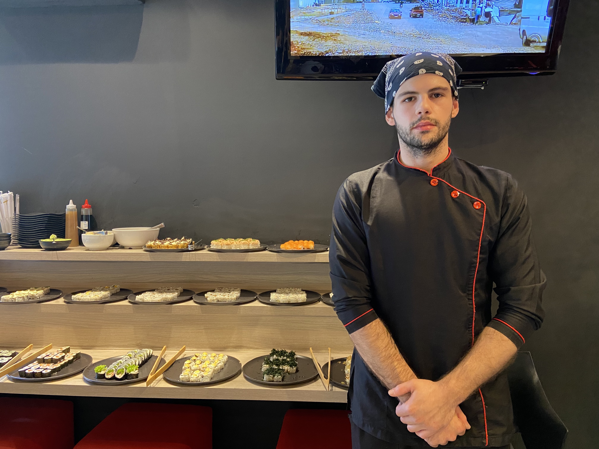

O Sabor do Talento - Histórias de Cozinheiros Nesta reportagem, exploraremos o mundo da gastronomia na vida de cozinheiros que tornam cada refeição uma obra-prima. Exploramos diferentes lugares pela Unisinos, conhecendo alguns dos profissionais da área gastronomica, e entendendo mais sobre eles e, é claro, suas deliciosas refeições.
Conversamos com um cozinheiro de sushi experiente para entender sua jornada na culinária japonesa. Com 6 anos de experiência, ele compartilhou como viu a indústria de sushi evoluir ao longo do tempo, com insumos e produtos mais diversificados e um aumento no reconhecimento da área. Sua carreira incluiu práticas em restaurantes renomados, uma escolha que o levou a fazer um curso especializado em sushi após receber uma oportunidade de emprego. Em relação ao salário, ele destacou que, embora tenha começado ganhando cerca de 1.200 reais, com dedicação e experiência, conseguiu aumentar sua remuneração para até 6.000 reais. Essa entrevista revela que a profissão de cozinheiro de sushi exige paixão, aprendizado contínuo e perseverança, proporcionando recompensas tanto na arte culinária quanto financeiramente.
Entrevistamos uma cozinheira de comida tradicional com 25 anos de experiência. Ela compartilhou como a indústria culinária evoluiu com equipamentos modernos e produtos semi-prontos, enfatizando a importância da aprendizagem prática. Sua escolha de carreira foi motivada pelo interesse em saúde e prevenção por meio da alimentação. Ela ganha entre 1.800 e 1.900 reais, e notou que a profissão atrai mais mulheres, enquanto os homens tendem a se tornar chefs de cozinha. Sua história reflete a paixão pela culinária tradicional e o compromisso com uma alimentação saudável.